Schnellis - Die Algenvernichter
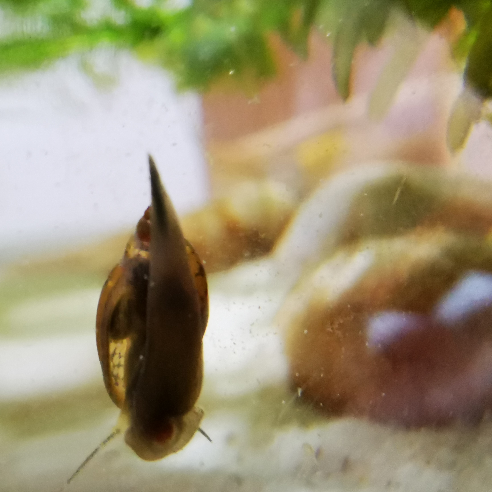
Blasenschnecke
..

Helmschnecke
..
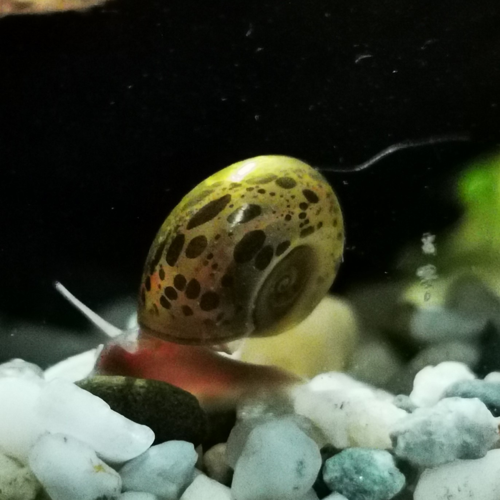
Posthornschnecke
..

..
..

..
Blasenschnecken sind Wasserlungenatmer und stammen ursprünglich aus Lateinamerika. Man findet Sie in jedem Fluss oder Gewässer.
Das Gehäuse ist glatt, glänzend und von der Farbe hell bis dunkelbraun gefärbt.
Die Fühler sowie der Fuß sind schlank und schmal gehalten.
Im Gegensatz zu anderen Schneckenarten ist Ihr Gehäuse linksgewunden.
Das macht Sie im Aquarium zu etwas besonderen.
Temperatur: 4 - 33 °C
Gehäusegröße: 1 bis 2 cm
Lebensdauer: 1 Jahr
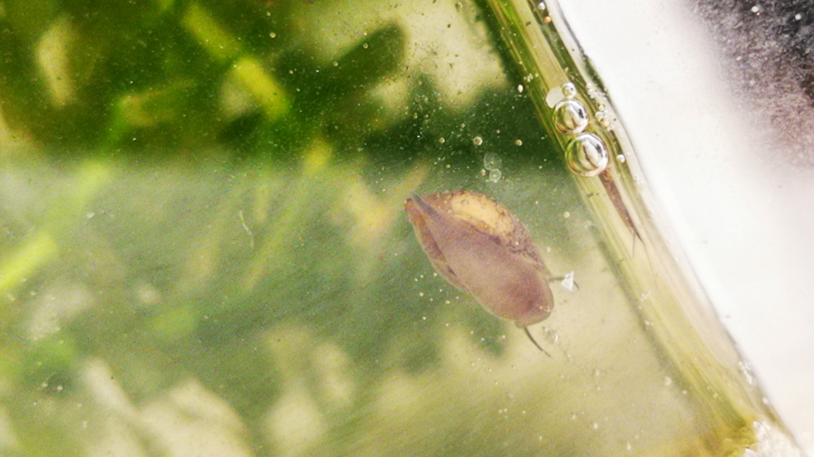

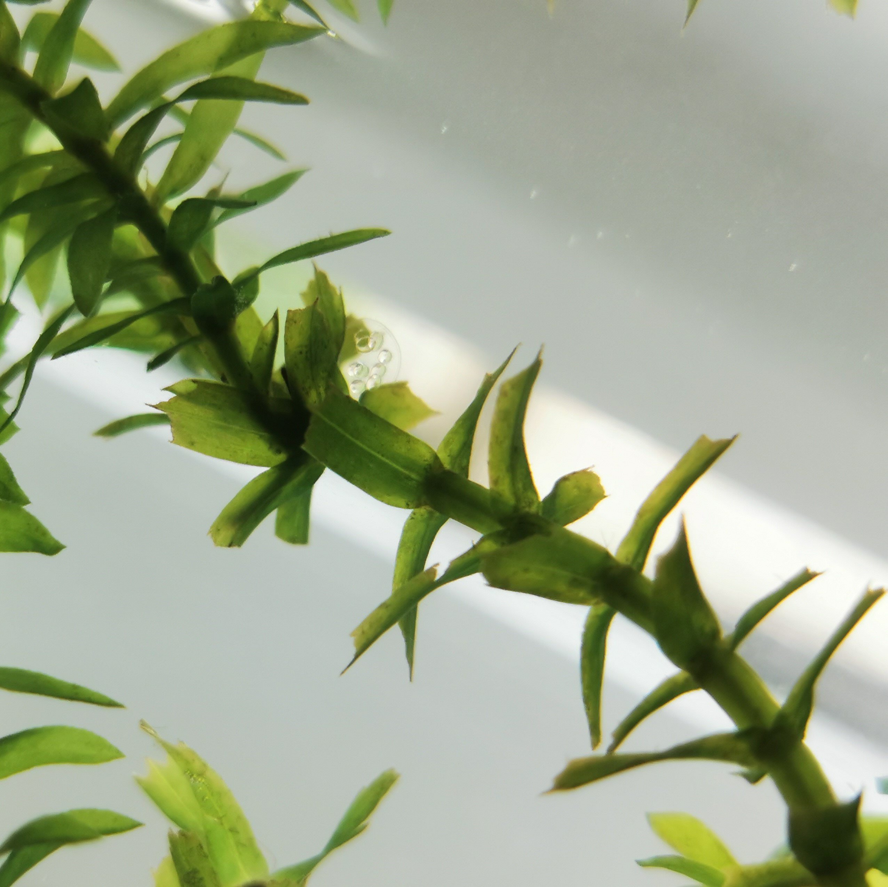
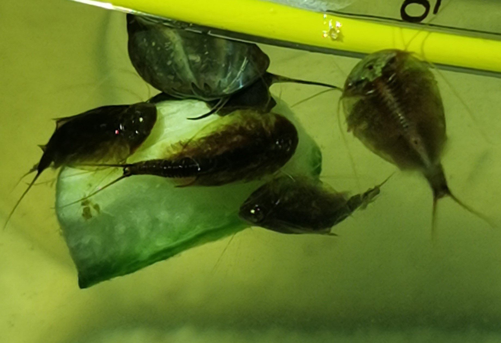
Die Anthrazit-Napfschnecke, auch bekannt als Stahlhelmschnecke, Algenrennschnecke.. von "Pulli" bis hin zu "Helmi".
Napfschnecken sind Kiemenatmer und stammen ursprünglich aus Südostasien.
Sie gehören zu der Gattung Neritidae, den Nixenschnecken.
Das Gehäuse ist sehr robust und die Farben variieren von dunkelgrau bis dunkelbraun. Der dunkelgraue Fuß befindet sich auf der Unterseite. Ist dieser kleiner als die Gehäuseöffnung so sollte die Napfschnecke zusätzlich befüttert werden. Die Fühler sind dünn und fadenförmig und können ganz schön lang werden, je älter die Schnecke wird. Der metallisch-schwarzgraue Belag auf dem Gehäuse schützt vor Korrosion im Weichwasser.
Temperatur: 18 - 30 °C
Gehäusegröße: 3 bis 4 cm
Lebensdauer: 8 Jahren
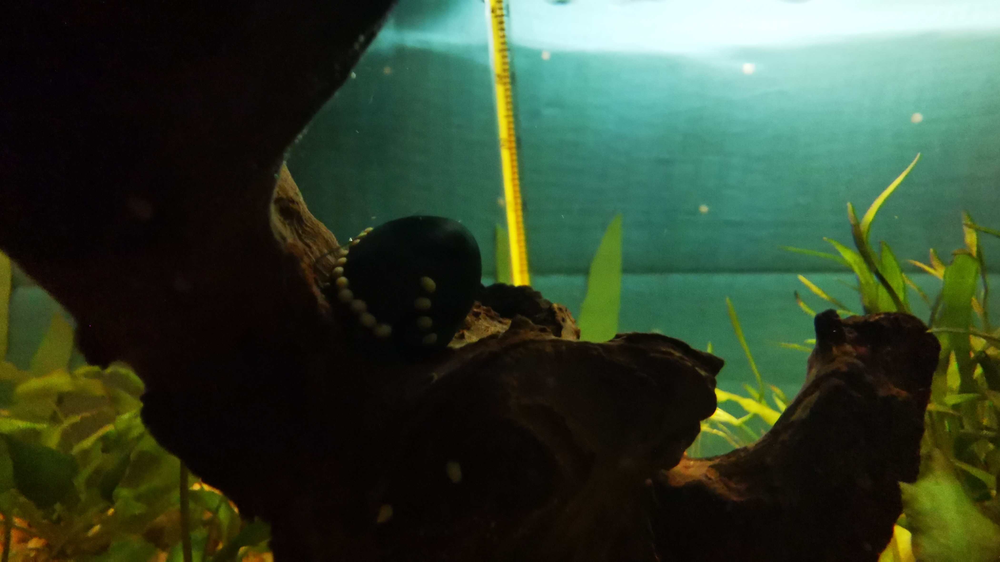
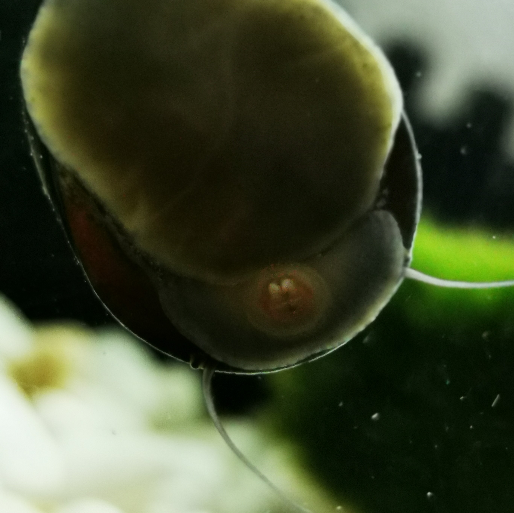
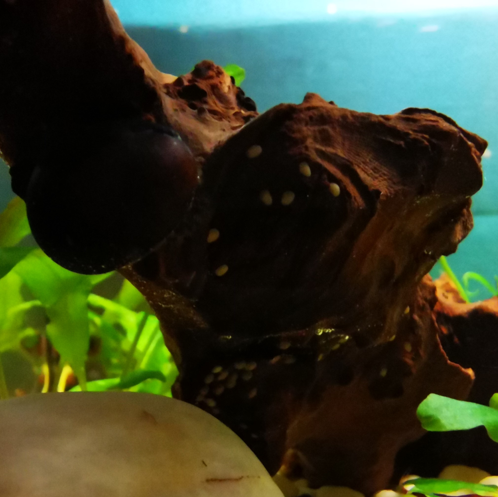
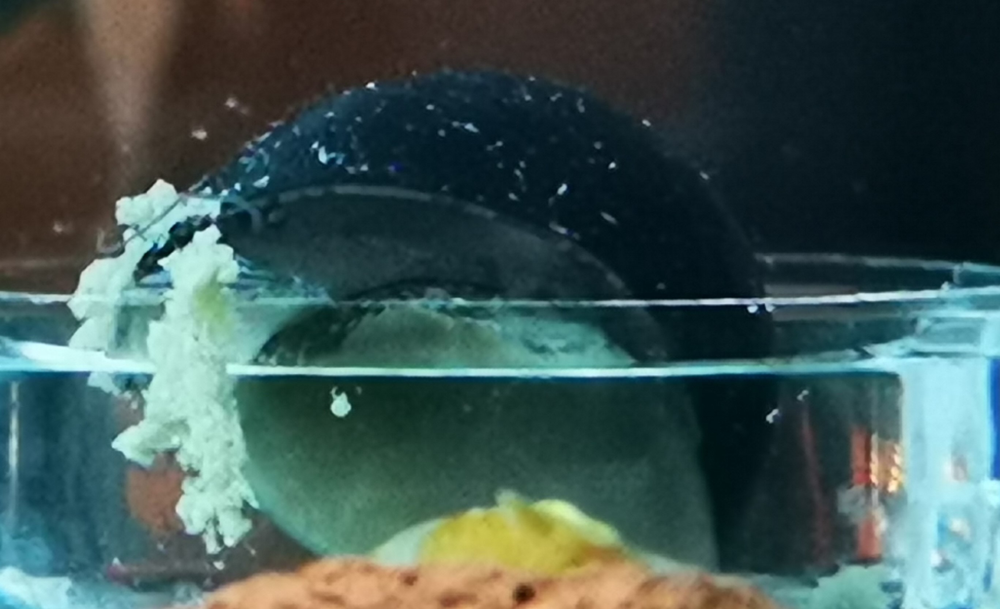
Ihre genaue Herkunft ist sehr umstritten, in der Aquaristik wird Sie größtenteils aus Asien oder den USA importiert.
Posthornschnecken gehören zur Gattung Planorbidae den Tellerschnecken und sind Wasserlungenatmer.
Von Gelb bis Orange, Rot, Blau bis Violette. Man findet Sie in diversen Farben. Das Gehäuse erinnert, wie der Name es bereits erwähnt an ein Posthorn.
Temperatur: 18-30 °C
Gehäusegröße: 3 bis 4 cm
Lebensdauer: 3 Jahren

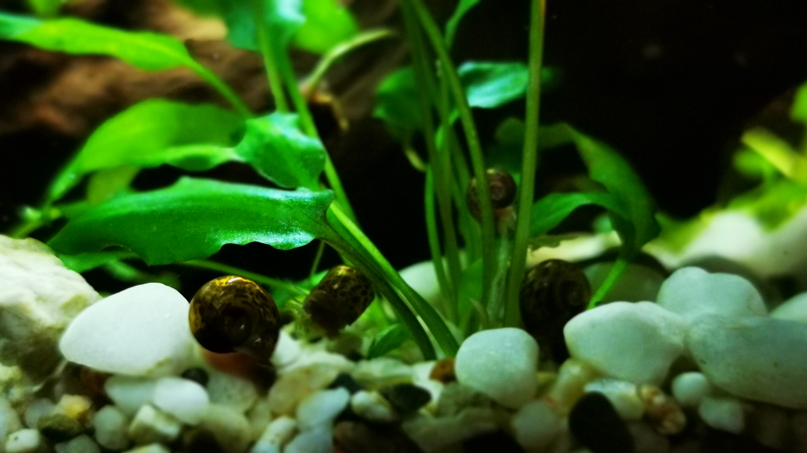
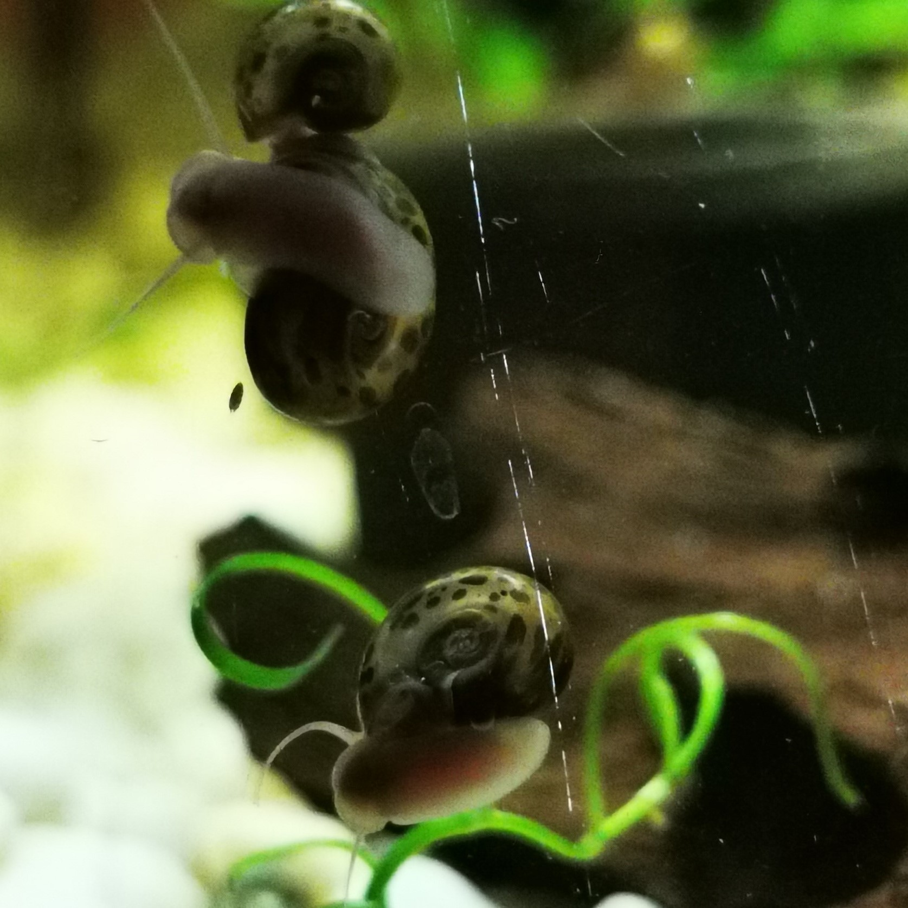
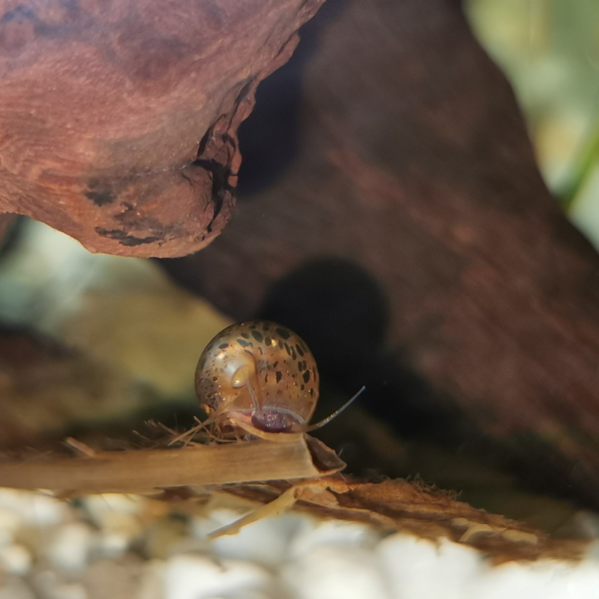
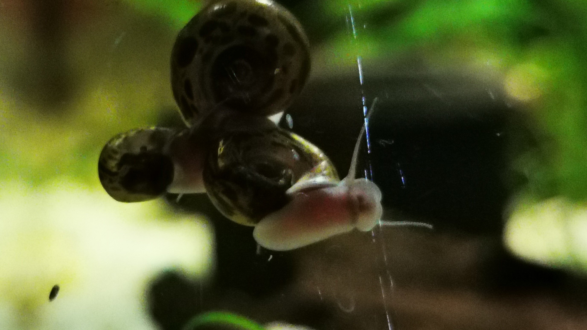